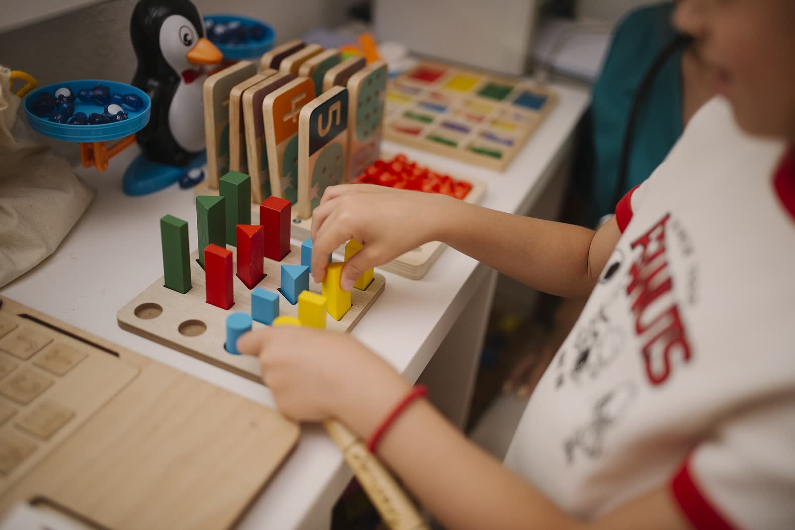
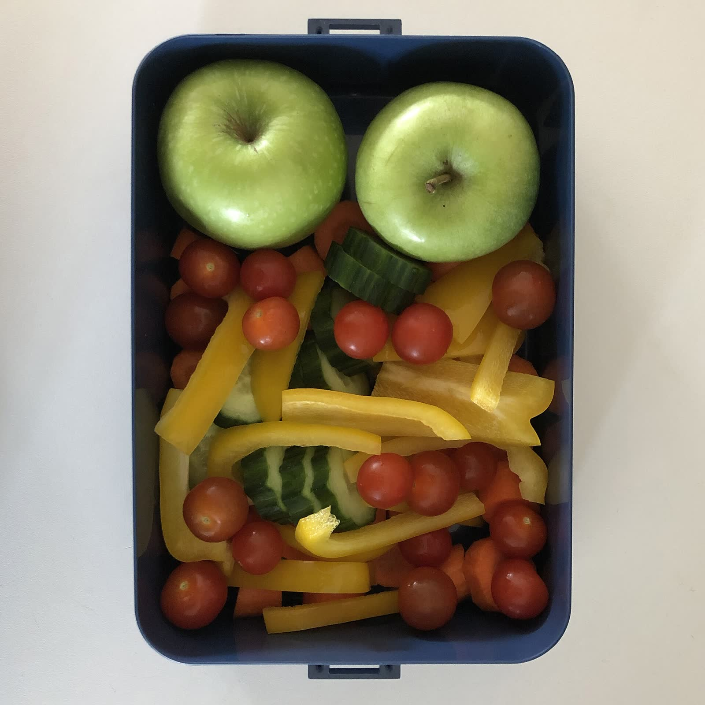
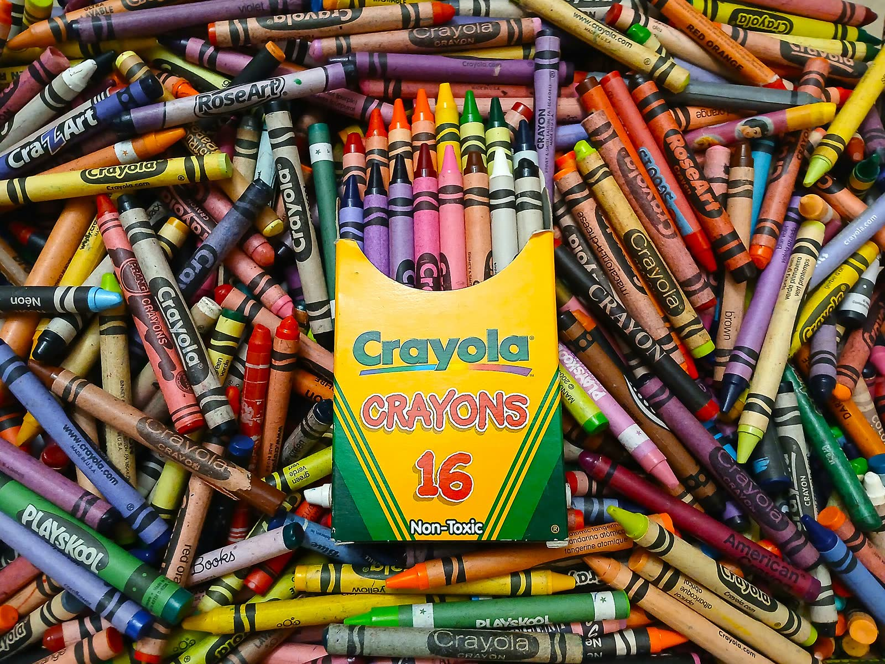

Daycare
Free daycare places
We pay for a child’s place at daycare so a young single mother can return to school or work.
How it worksCaribaid Foundation · Castries, Saint Lucia
We help children and young single mothers with free daycare places, meals, clothes and school supplies, so that mothers can go back to school and children are cared for.
Building now: a free daycare for 50 children. How you can help
Caribaid is small and local. What we are given goes to children and mothers we know by name.

We pay for a child’s place at daycare so a young single mother can return to school or work.
How it works
A child who has eaten can play, listen and learn. We provide meals for the children in our care.
How it works
We collect good used clothes, books, bags and stationery and pass them to families who need them.
How it worksWhat we are working towards
Today Caribaid pays for places at private daycares. Our goal is a daycare of our own, free to the families who need it most, so that no young mother has to choose between her child and her schooling.
50 places. One block for each child the daycare will hold.
Who we are
Caribaid Foundation is a not-for-profit organisation founded by Earl Augustin. When a schoolgirl becomes a mother, her own education usually stops. A free daycare place gives her a way back.
The work also covers meals, clothing, school supplies and mentoring for young boys, and it is carried by volunteers: fundraisers, cooks, teachers and mentors.
Read more about our workA bag of clothes your children have outgrown. A box of exercise books. An afternoon of your time. Tell us what you can give and we will arrange the rest.
Preview by Code Canvas · wording and photos to be confirmed with Caribaid